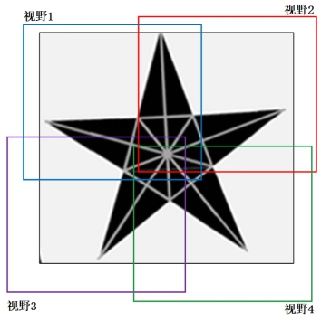
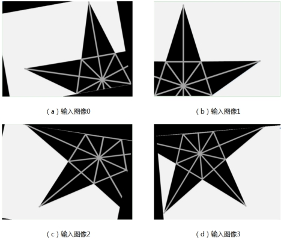
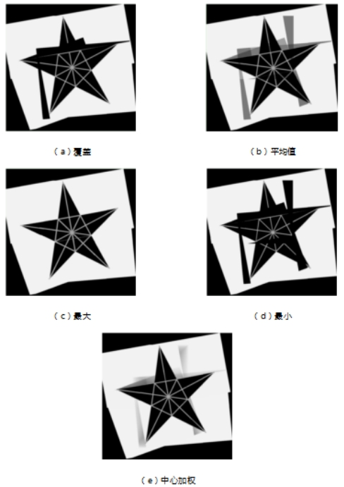
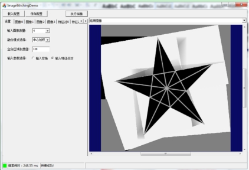
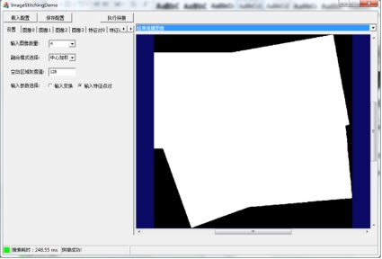

Ghép ảnh là kỹ thuật tổng hợp nhiều bức ảnh kích thước nhỏ có vùng chồng lấn nhất định từ cùng một cảnh thành một bức ảnh lớn liền mạch có độ phân giải cao (các bức ảnh này có thể thu được từ thời gian, góc nhìn hoặc cảm biến khác nhau), Hình 1 đưa ra một sơ đồ minh họa đơn giản. Trong lĩnh vực thị giác công nghiệp, kỹ thuật ghép ảnh có thể áp dụng cho các cảnh có trường nhìn lớn, khổ lớn mà một camera đơn lẻ không thể đáp ứng, khắc phục một phần hạn chế về trường nhìn và độ phân giải của camera diện (area scan camera).

| Phân loại | Tên tham số | Mô tả tham số |
|---|---|---|
| Cửa sổ thuộc tính | Chế độ hòa trộn | Các chế độ ghép ảnh, chủ yếu gồm: Ghi đè (Phủ), Giá trị lớn nhất, Giá trị nhỏ nhất, Giá trị trung bình và Trọng số trung tâm. |
| Giá trị xám vùng trống | Giá trị pixel trong ảnh kết quả tại những vị trí không được tính toán từ ảnh đầu vào. | |
| Bật tính toán song song | Có bật tính toán song song hay không. Khi chọn "Có", thuật toán sẽ bật chế độ tính toán song song OpenMp để tăng tốc độ, nhưng có thể xảy ra tình trạng thời gian xử lý không ổn định; khi chọn "Không", thuật toán sẽ tắt OpenMp. | |
| Phần trăm số luồng | Thiết lập phần trăm số luồng cho tính toán song song, phạm vi hiệu lực là (0, 0.75], tương ứng với phạm vi phần trăm (0%, 75%]. | |
| Cửa sổ hình ảnh | Ảnh đầu vào | Hiển thị một trong hai ảnh đầu vào. |
| Liên kết dữ liệu | Ảnh đầu vào 0 | Bức ảnh thứ nhất cần hòa trộn. Bức ảnh này sẽ không bị che lấp nếu chọn chế độ Ghi đè (Phủ). |
| Ảnh đầu vào 1 | Bức ảnh thứ hai cần hòa trộn. | |
| Điểm đặc trưng khớp nối phía trước Ảnh 0 | Tùy chọn, có thể không cần thiết lập điểm đặc trưng. | |
| Điểm đặc trưng khớp nối phía sau Ảnh 0 | Bắt buộc thiết lập, ảnh hưởng đến hiệu quả hòa trộn. Lưu ý: Các điểm đặc trưng được chọn phải được trích xuất từ phần chồng lấn của hai hình ảnh. | |
| Điểm đặc trưng khớp nối phía trước Ảnh 1 | Bắt buộc thiết lập, ảnh hưởng đến hiệu quả hòa trộn. Lưu ý: Các điểm đặc trưng được chọn phải được trích xuất từ phần chồng lấn của hai hình ảnh. | |
| Điểm đặc trưng khớp nối phía sau Ảnh 1 | Tùy chọn, có thể không cần thiết lập điểm đặc trưng. | |
| Giao diện nâng cao | Không | Không |
| Phân loại | Tên tham số | Mô tả tham số |
|---|---|---|
| Cửa sổ giám sát | Ảnh mặt nạ kết quả | Ảnh kết quả, màu trắng là vùng ảnh hợp lệ. |
| Tham số biến đổi Ảnh 0 | Ma trận biến đổi của Ảnh 0 từ trước khi ghép đến sau khi ghép. | |
| Tham số biến đổi Ảnh 1 | Ma trận biến đổi của Ảnh 1 từ trước khi ghép đến sau khi ghép. | |
| Điểm đặc trưng khớp nối phía trước ảnh kết quả | Điểm đặc trưng khớp nối phía trước ảnh kết quả. | |
| Điểm đặc trưng khớp nối phía sau ảnh kết quả | Điểm đặc trưng khớp nối phía sau ảnh kết quả. | |
| Ảnh đầu ra | Ảnh sau khi đã được hòa trộn (ghép). | |
| Kết quả thực thi | Kết quả thực thi của công cụ. | |
| Thời gian thực thi | Thời gian thực thi của công cụ. | |
| Cửa sổ hình ảnh | Ảnh đầu ra | Kết quả hình ảnh sau khi ghép. |
| Kết quả thực thi | Hiển thị kết quả thực thi công cụ, thành công hiện "OK", thất bại hiện "NG", giống tham số kết quả thực thi trong Cửa sổ giám sát. | |
| Liên kết dữ liệu | Ảnh mặt nạ kết quả | Ảnh mặt nạ kết quả. |
| Tham số biến đổi Ảnh 0 | Tham số biến đổi Ảnh 0. | |
| Tham số biến đổi Ảnh 1 | Tham số biến đổi Ảnh 1. | |
| Điểm đặc trưng khớp nối phía trước ảnh kết quả | Điểm đặc trưng khớp nối phía trước ảnh kết quả. | |
| Điểm đặc trưng khớp nối phía sau ảnh kết quả | Điểm đặc trưng khớp nối phía sau ảnh kết quả. | |
| Ảnh đầu ra | Ảnh sau khi đã được hòa trộn (ghép). |
Chức năng ghép ảnh là kết hợp hai hoặc nhiều hình ảnh thành một hình ảnh kết quả duy nhất. Ảnh đầu vào có thể là ảnh chụp từ một camera di chuyển hoặc ảnh từ nhiều camera. Khi ghép, cần xem xét các mô hình đặc trưng khớp nối của nhiều hình ảnh. Ở đây có hai mô hình đặc trưng: Một là biến đổi tuyến tính 2D tương ứng của hình ảnh (biến đổi ảnh đầu vào sang hệ tọa độ khách hàng chung, bao gồm xoay, tỷ lệ, tịnh tiến); Hai là các điểm đặc trưng tương ứng giữa các hình ảnh đầu vào.
Trong quá trình ghép ảnh, đối với các vùng chồng lấn trong nhiều hình ảnh, các thuật toán hòa trộn khác nhau sẽ được sử dụng để xử lý.
Trong quá trình ghép ảnh, sẽ có các vùng chồng lấn giữa nhiều hình ảnh, thuật toán hòa trộn đề cập đến cách tính toán giá trị xám của các pixel trong vùng chồng lấn đó. Có 5 phương pháp: Phủ (Ghi đè), Giá trị lớn nhất, Giá trị nhỏ nhất, Giá trị trung bình và Trung bình có trọng số (trọng số tâm).
Chọn giá trị xám pixel của hình ảnh đầu vào cuối cùng làm giá trị xám cho pixel tại vùng chồng lấn.
Chọn giá trị lớn nhất trong các pixel của nhiều hình ảnh đầu vào làm giá trị xám cho pixel tại vùng chồng lấn.
Chọn giá trị nhỏ nhất trong các pixel của nhiều hình ảnh đầu vào làm giá trị xám cho pixel tại vùng chồng lấn.
Chọn giá trị trung bình cộng của các pixel từ nhiều hình ảnh đầu vào làm giá trị xám cho pixel tại vùng chồng lấn.
Chọn giá trị trung bình có trọng số của các pixel từ nhiều hình ảnh đầu vào làm giá trị xám cho pixel tại vùng chồng lấn (thường ưu tiên pixel ở trung tâm ảnh hơn pixel ở biên).
Đánh dấu xem vị trí tương ứng trong ảnh kết quả ghép nối có được tính toán từ ảnh đầu vào hay không (Vùng hợp lệ).
Giá trị pixel tại các vị trí trong ảnh kết quả không được tính toán từ ảnh đầu vào (vùng nền).
Hình 2 đưa ra bốn hình ảnh đầu vào, Hình 3 đưa ra kết quả ghép nối của các chế độ hòa trộn: Phủ, Trung bình, Lớn nhất, Nhỏ nhất, Trọng số tâm. Hình 4 và Hình 5 lần lượt đưa ra các ví dụ về giá trị pixel vùng trống và ảnh mặt nạ kết quả.




Không
参见“\Samples\图像拼接工具.gvp”。